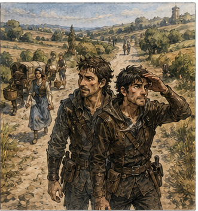
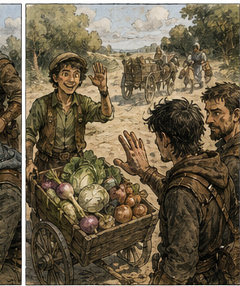
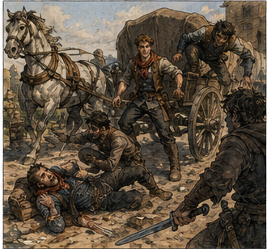
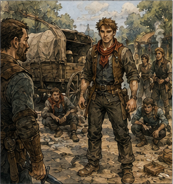

The turnip man was innocent.
This was disappointing for several reasons, most of which reflected badly on me.
Len was already on Mill Road when Jorren and I arrived for the observation patrol. He had upgraded from a basket to a handcart containing turnips, onions, two cabbages, and a wooden sign with prices that suggested either admirable confidence or a misunderstanding of onions.
He saw us and waved. I waved back.
"Friend?" Jorren asked.
"I accused him privately of being a criminal yesterday."
"Privately?"
"In my head."
Jorren nodded. "Generous."
"I corrected."
"You were wrong."
"Correction usually requires that."
Len called from across the road, "You buying today?"
"No," I said.
"Then stop staring at my onions."
I liked him more every time we met.
The guild had given us a simple instruction: walk the problem stretch of road, be visible, observe, and report. We were not bait. We were not investigators. We were not authorized to kick in doors because somebody owned a suspicious shovel.
I had repeated those facts to myself twice before breakfast.
Not because I needed to.
Because I absolutely needed to.
The patrol remained boring for almost an hour. A farm cart passed. Then two women carrying baskets. Len pushed his vegetables north while loudly informing one wheel of his cart that it was a disgrace to woodworking.


Nothing happened.
Ideal.
I hated it.
Then someone screamed around the bend ahead.

Not fear. Anger.
Jorren drew his sword and ran. I followed.
We came around the bend into a scene that took a moment to sort itself into useful pieces. A delivery wagon stood crooked across the road. One horse strained in the traces. A man lay in the ditch holding his nose. Another man had dropped a knife. A third was halfway over the rear wheel.
And one young adventurer stood in the middle of all of it.
He was perhaps twenty-one. Broad-shouldered, dark-haired, wearing patched leather and a red scarf that would have looked ridiculous on someone less certain it looked excellent. He had the knife man's wrist in one hand and a sword in the other.
The man in the ditch shouted, "You broke my fucking nose!"
"I kicked you in the chest," the adventurer said. "Your nose is your own problem."
The third thief came over the wagon wheel behind him.
I saw it first.
"Right," I called.
The adventurer turned too late.
The thief dropped with a length of wood raised over his head. I could not reach him. My mind offered Barrier, reinforcement, three angles, and a body I did not possess.
No.
Current body.
Current problem.
The wagon's tailboard hung loose beside me.
I kicked it.
The board swung into the thief's shin as he landed. He stumbled. The adventurer stepped in and hit him once, hard, with the pommel.
The thief went down.
Jorren arrived beside me with his sword out.
He looked at the three men.
Then at the stranger.
Then at me.
"Observation patrol," Jorren said.
"I observed."
The stranger laughed.
And something in my head broke open.
Not memory exactly.
Music.
I knew that laugh.
No.
I knew the shape around it.
A tune crawled up from somewhere forty years away.
Low voices in a tavern.
Boots keeping time against a floor.
Someone murdering the third verse because nobody ever remembered the third verse.
A name.
Marr.
My stomach tightened.
The young man wiped blood from his knuckles and offered me his hand.
"Alden Marr."
There it was.
The song moved again.
Not enough.
Never enough.
Something about bells.
Something about a gate.
Marr came down when the bells were...
Ringing?
Burning?
No.
Wrong.
I remembered a room full of soldiers singing it after midnight. I remembered telling them to shut up. I remembered knowing all the words.
Now I had three.
Maybe four.
Alden raised an eyebrow.
"You have a name?"
Too many.
"Greg."
He waited.
"Just Greg."
"All right, Just Greg."
I hated him immediately.
That helped.
Jorren sheathed his sword only after checking the men on the ground. The driver remained on the wagon bench, pale and furious, both hands locked around the reins.
"What happened?" Jorren asked him.
"They blocked me," the driver said. "One asked about the wheel. Then that bastard pulled a knife."
He pointed at the man Alden had disarmed.
Independent confirmation.
Good.
I looked at the road. No loosened patch this time. A large stone sat in the center rut, enough to make a cautious driver slow down without actually blocking passage.
Different method.
Same purpose.
Alden pointed at the thieves. "Tie them."
I looked at him.
He looked at me.
"Why are you giving orders?" I asked.
"Because they're robbers."
"That's not what I asked."
Alden smiled.
That smile tugged at another piece of memory.
Not a face.
A title.
Protector.
Maybe.
Lord something.
The song again, farther away now.
...the Protector swore...
No.
Maybe that was another song.
Forty years was too long to trust a rhyme.
"Somebody should give orders," Alden said.
That landed harder than it should have.
Jorren glanced at me, then said, "We should tie them."
"Yes."
Alden's smile widened.
I pointed at him. "Not because he said so."
"Of course not," Jorren said.
"Important distinction."
"Very."
Alden laughed again.
I disliked the song more each time.
We bound the thieves with rope from the wagon. Alden helped without being asked. When one man's wrists twisted badly under the knot, Alden loosened the rope, retied it, and moved on without comment.
Inconvenient.
Historical monsters should have the decency to be monsters early.
Except I did not actually know that he had been one.
I knew the name.
I knew the song.
I knew people had argued about him decades later.
I knew something terrible had happened.
A city?
Ash?
Bells?
I reached for the memory and got a woman laughing into a mug because someone had replaced a line about a duke with a line about his balls.
Useful.
Very useful.
The disarmed thief spat blood into the road.
"Fuck all of you."
Alden crouched in front of him.
"How many?"
I stepped closer. "Don't."
Alden looked up. "Don't what?"
"Interrogate him."
"Why?"
"Because if you scare him into giving you whatever answer makes you happy, the guard gets bad information and the other two learn what story to copy."
Alden's expression changed.
Not offended.
Interested.
I continued before I thought better of it. "If you want useful answers, separate them first."
He looked at the prisoners.
Then at me.
"That's better."
"I know."
Jorren looked at me.
I ignored him.
Alden stood. "You're strange."
"Frequently."
"Guild?"
"Bronze."
His eyebrows rose.
That annoyed me.
"What rank are you?"
"Bronze."
"How long?"
"Three months."
I looked at the three men he had put on the ground before we arrived.
That was information.
His technique was not refined. He overcommitted his shoulders. His guard opened when he chased a finish. His balance was good. His reactions were better. He had confidence in quantities normally associated with either talent or impending death.
But he could act. Now.
I had spent weeks investing in myself. Correctly. My body was nineteen, my channels undeveloped. My Barrier was a tiny, unreliable plane that could redirect a copper coin on a good attempt and strain me if I asked it the wrong question. My sword work contained forty years of answers trapped behind a body that could execute only some of them.
I was a good investment with a painfully long horizon.
Old Greg had rarely solved that problem by waiting until he personally became every tool required.
He found tools. Usually people. The familiarity of that thought made me uncomfortable.
The driver asked, "What do we do now?"
Current problem.
Good.
We had three prisoners, a wagon, a frightened horse, two contracted guild adventurers, and Alden Marr.
Whatever Alden became forty years from now was not currently on the road.
A young man was.
"We take them to Carrow," Jorren said.
Alden nodded as if Jorren had confirmed his plan.
I saw the tiny movement.
Interesting.
We reorganized. Jorren walked beside the wagon. Alden and I followed with the prisoners connected by rope.

I did not arrange that intentionally.
Probably.
Alden walked like the road belonged to him.
"Just Greg."
"Don't."
"What?"
"Call me that."
"You introduced yourself that way."
"I said Greg."
"You said just Greg."
"Because you asked for more."
"So there is more."
"No."
"Then Just Greg."
I considered whether preventing a future historical tragedy justified murder on a public road.
Probably not.
Also, I did not know what tragedy.
Important.
"Do you always talk this much?" I asked.
"Only when someone interesting is nearby."
I moved two steps farther away.
Alden laughed.
One of the prisoners groaned. "Can you two shut up?"
"No," Alden and I said together.
I looked at him.
He grinned.
Bad.
"Why Bronze?" he asked.
"Because Copper would be embarrassing."
"That's not what I meant."
"I know."
"You move oddly."
"Oddly."
"Like you know where you should be, but you get there late."
That was irritatingly perceptive.
"Old injury," I said.
"You're nineteen."
"How do you know?"
"You look nineteen."
"I could be twenty."
"Are you?"
"No."
Alden smiled.
I needed to stop feeding him.
"What about you?" I asked.
"Twenty-one."
"Why adventuring?"
"Money."
That was almost disappointingly ordinary.
Then he added, "And I got tired of being told what to do by men worse at everything than me."
There.
Something in the song shifted.
Not words.
A feeling.
People cheering.
A title shouted by thousands.
Protector.
I was almost certain now.
Almost was dangerous.
"Everything?" I asked.
"Most things."
"Modest."
"Accurate."
One of the prisoners muttered, "Prick."
Alden looked at him. "You lost."
The prisoner shut up.
I remembered nothing useful.
That was becoming useful in itself.
I did not know Alden Marr.
I knew that his name survived.
I knew there was a song.
I knew the song was not happy.
Maybe it began happy.
That felt right.
Hero verses first.
Then something changed.
A gate.
Bells.
Fire.
Someone waiting.
I could almost hear a line.
...and Marr came home...
Gone.
I hated memory.
The nearest prisoner stumbled. Alden caught the back of his shirt before he fell. The rope had tightened around the man's wrist again. Alden stopped, fixed it, and shoved him forward.
No cruelty.
No kindness either.
Maintenance.
Keep the prisoner walking.
I understood that.
That was worse.
"You're doing it again," Alden said.
"What?"
"Leaving."
"I'm walking beside you."
"Your face goes somewhere else."
Everyone knew my face.
I needed a helmet.
"What do you want?" I asked.
"Right now?"
"In general."
Alden answered without much thought. "Gold."
I nearly laughed.
"Why?"
"Better contracts."
"Then?"
"Platinum."
"Then?"
He shrugged. "Whatever comes after."
"Why not S?"
Alden looked at me.
He actually considered it.
"Maybe."
No boast.
No embarrassment.
Just maybe.
Interesting.
Dangerous.
I had known S-class adventurers who spent their entire childhood announcing it.
Most did not make Gold.
Alden Marr apparently became important enough that drunk men forty years later sang about him.
That did not tell me whether he ever reached S.
It made Bronze look unlikely to be his ceiling.
The guild hall came into view.
The ink-thumbed clerk saw us approaching through the open door and closed her eyes.
"Why are there four more people?"
"Three criminals," Alden said.
"Alleged," I said.
"One hero," Alden added.
The clerk looked at him.
Then at me.
"Who is he?"
"Complication."
"Alden Marr."
He offered his hand across the counter.
She did not take it.
I loved her.
The road thieves went to two city watchmen after the driver gave his statement. The clerk separated them before questioning.
Alden glanced at me.
I should not have felt pleased.
I did.
She reviewed our contract.
"Observation patrol."
"Successful," I said.
"You were supposed to observe."
"We observed a robbery."
"And?"
"Then neutrality became impractical."
Jorren leaned against the counter. "They were already fighting when we arrived."
The clerk looked at Alden. "Why were you on Mill Road?"
"Job."
"Which?"
"Missing goat."
Silence.
I looked at him.
He looked at me.
"Missing goat," I repeated.
"Yes."
"Where is the goat?"
Alden pointed outside.
A small gray goat stood beside the hitching post chewing the corner of Len's abandoned price sign.
I had not noticed the goat.
Jorren started laughing.
The clerk stared at Alden. "You found the goat."
"Yes."
"Then stopped a robbery."
"Yes."
"While returning the goat."
"Yes."
The song tried to start again.
I almost laughed with Jorren instead.
Whatever history had done with Alden Marr, today he was a Bronze adventurer with a goat.
That mattered too.
The clerk paid him six copper for the recovery and four for assisting with the thieves. Ten copper.
I had made twelve.
Victory.
Narrow.
Important.
Alden counted the coins once and put them away.
Fast gains. The phrase appeared without invitation, and I disliked how quickly I began evaluating it.
Hessa could make my training smarter. Jorren could make my body better. Pell could build things I remembered but could not reproduce. Antonius could put me near problems and capital.
My own combat power was still a long-horizon investment.
Old Greg had another kind of power: he made other people better, sometimes magically and often not.
He identified what someone could do, what they could not, what they wanted, and which change would make them more useful.
I looked at Alden Marr. Strong now. Fast now. Ambitious now. Remembered later, for reasons I could not trust.
A terrible investment. An extraordinary one.
Something in me reached.
"Where are you staying?" I asked.
Jorren looked at me immediately.
Alden noticed.
"Why?"
"Curiosity."
"You interrogated me for half the walk."
"Conversation."
"Now you want my address."
"I don't need the room number."
"Comforting."
I could feel myself selecting an approach. Harmless Greg? No. Alden would dislike harmless. Respect, then. Recognition.
Give him the thing he already believed but did not want cheaply. The mechanism was so familiar I almost missed myself doing it.
"I want to train with you."
Alden's grin faded.
Good.
Seriousness got his attention.
"Why?"
"You're better than your rank."
His expression barely changed.
But I had him.
Not because he was vain.
Because he agreed.
"I know," Alden said.
Of course.
"I am worse than mine in several important ways," I said.
Jorren made a sound.
I looked at him. "What?"
"Nothing."
Alden studied me. "That's a strange recruitment speech."
"I haven't recruited you."
"Yet."
I smiled.
He smiled back.
Oh, this was going to be a problem.
"Tomorrow," I said. "Guild yard."
"With him?"
Alden pointed at Jorren.
Jorren straightened. "Don't involve me."
"Yes," I said.
"No," Jorren said.
Alden laughed. "Third bell?"
Jorren looked at me, then at Alden.
"Fine."
Alden nodded as though he had arranged it. Again. That tiny assumption of center.
I noticed because I knew to look, or because I was inventing evidence around a song. Both were possible.
Alden headed for the door.
The goat bleated.
He untied it.
I stared. "Why do you still have the goat?"
"Owner's across town."
"The contract didn't require delivery?"
"Guild pays for recovery. Owner pays two more copper if I bring it."
Of course.
He started walking.
The goat followed for three steps, then stopped at a puddle.
Alden pulled.
The goat pulled back.
Future historical catastrophe Alden Marr lost his first tactical engagement with livestock.
I laughed.
The goat won.
Alden eventually picked it up under one arm. It kicked him in the thigh.
He swore and kept carrying it.
Then he disappeared around the corner.
Jorren stood beside me.
"No."
I looked at him. "What?"
"Whatever you're doing."
"I'm training."
"You're collecting him."
"I don't collect people."
"Pell."
"You don't know Pell."
"The lender."
"Antonius is collecting me, if anything."
"That woman you keep almost mentioning."
"Hessa."
"So there is a Hessa."
"That's not the point."
Jorren looked toward the corner where Alden had vanished.
"You knew his name."
I went still.
"He told us his name."
"Before that."
"No."
"Greg."
I looked at Jorren.
He was not stupid.
This was becoming inconvenient.
"When he said it," Jorren continued, "you looked sick."
"I've heard it before."
"Where?"
I considered the song.
I could not explain the taverns where I remembered hearing it because some had not been built yet.
"I don't know."
Jorren frowned.
"That's true," I said.
He believed that part.
"What do you want from him?"
There was the better question: not what Alden became, or what I remembered. What did I want from him now?
I looked at my hands. Young. Callused differently. Capable of more every week. Not enough.
I had finally accepted that rebuilding myself was going to take years. That did not make it the wrong investment. It made it slow.
"I want someone who can do things I can't yet," I said.
Jorren understood immediately.
"Then hire muscle."
"No."
"Why him?"
Because there was a song. Because people remembered his name. Because whatever the song meant, it had carried Alden Marr forty years.
Because I had spent my first life turning talented people into unfair problems for everyone standing opposite them, and some part of me had been waiting to do that again.
"I don't know yet."
It did not stop the next thought.
I could make him better.
The thought was quiet.
Confident.
Old.
Then another piece of the song surfaced.
Only a rhythm at first.
Then words.
Not enough to understand.
Enough to make me cold.
...when the last bell broke...
I waited.
Nothing else came.
No city.
No reason.
No ending.
Just a young man carrying a goat and a song written decades later.
I should have stayed away from him.
Instead I asked Jorren, "What does he do badly?"
Jorren closed his eyes.
"Fuck."
I smiled.
There I was.